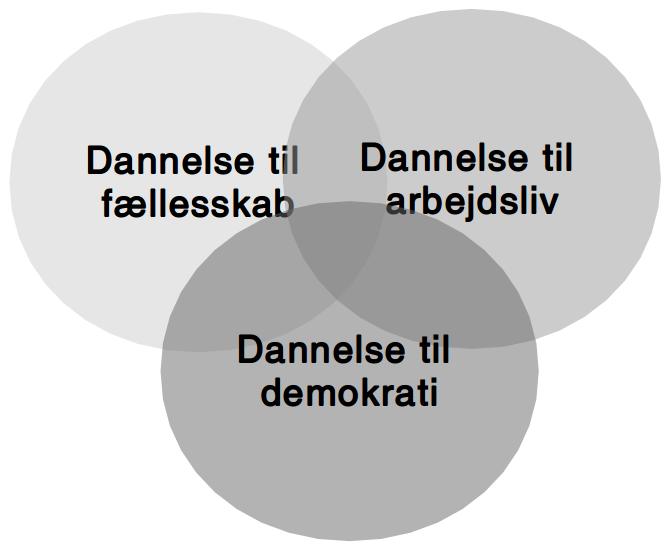

Gert Biesta (2013). Demokratilæring i skole og samfund -
uddannelse, livslang læring og medborgerskabets politik

Hvorvidt kan unge og professionelle i det ungdoms- og fritidspædagogiske felt sammen igangsætte politiske dannelsesprocesser?
Det var en helt almindelig folkeskole. Og jeg blev mobbet hver dag og truet og alt muligt. Og så prøvede jeg et par gange at sige noget til lærerne, og de var sådan: "Vi skal nok tage det op i klassen i morgen, og vi skal nok tage det op i klassen i morgen". Der skete ikke noget. […] Og har vi kommet op i en slåskamp, jamen, så er den ikke blevet stoppet af nogle af lærerne eller noget som helst.
S: […] jeg fik at vide: "Sebastian, her er din nye kontaktperson", og der gik sådan 2 måneder, før jeg fik hans telefonnummer. Og så havde jeg fået sagsbehandler. Så fik jeg en ny igen. På tre år der har jeg haft - hvad? - 18 forskellige sagsbehandlere. […]
J: Har du nogen sådan ideer til, hvordan de kan blive bedre, sådan ud fra dine erfaringer?
S: Ja, at holde sig - ét - til én sagsbehandler. Og så er det den, der er der hele tiden. I stedet for at der skal komme nye hele tiden og sådan noget.
[…] jeg går ikke op i politik eller noget af alt det der. Og jeg har også allerede sagt til min lærer og min mor og alle, at til næste valg […] "det er fint nok, jeg skal nok gå derop og så også stemme blankt". Fordi jeg ved ikke hvad nogen af dem de siger, og jeg er egentlig også lidt ligeglad, så længe jeg kan få mig en lejlighed og et sted at bo og et arbejde.
[…] det de egentlig primært snakkede om hele tiden, det var faktisk studentereksamen og alt sådan noget. Og folk de skal bare være læger og advokater og alt sådan noget. Og jeg sad bare der på vejen hjem, der sad jeg bare og tænke over, hele tiden sådan noget studenter og gymnasial uddannelse og alt muligt. Hvorfor snakkede de ikke om håndværker?
[…] der er jo mange unge, der godt vil lave rap og sådan noget. Jeg kender faktisk et par stykker, der laver rap og sådan noget. […] der er jo heller ikke nogen steder, hvor man kan indspille det eller sådan noget. Og man skal selv ud og købe lydfil til 10.000 kr. og mikrofon og alt muligt. Og så også have sådan indspilningsprogram på computeren. Det koster også penge.